Aurora Kit (B + N1 + F1 + I3) — live emulator captures
Pixel-3a-class 1080×2400 · fresh account · provider-optional gate · unmodified walkthrough
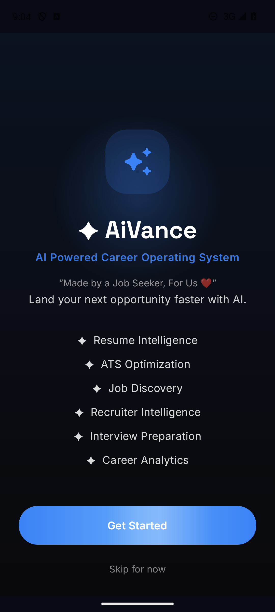
01 · Welcome — gate surface (F1 fonts)
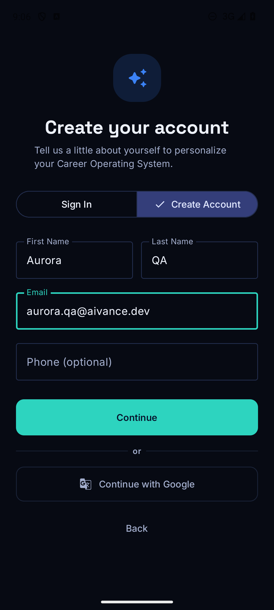
02 · Sign-up form — filled
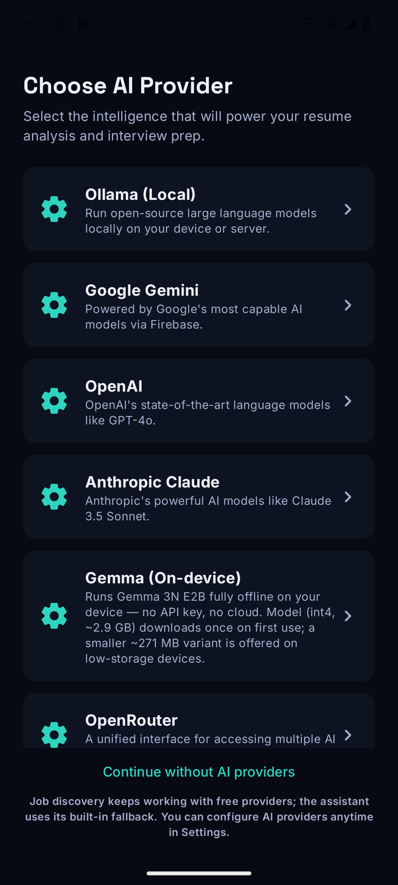
03 · Provider setup — selection grid
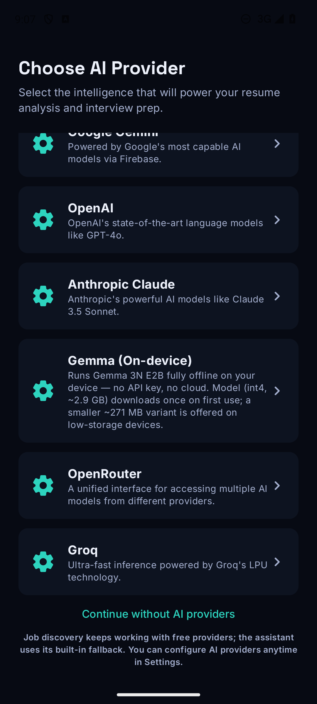
04 · Provider setup — opt-out path
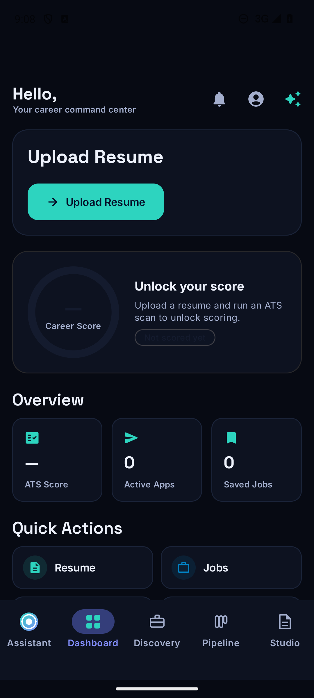
05 · Dashboard — first tab + top bar
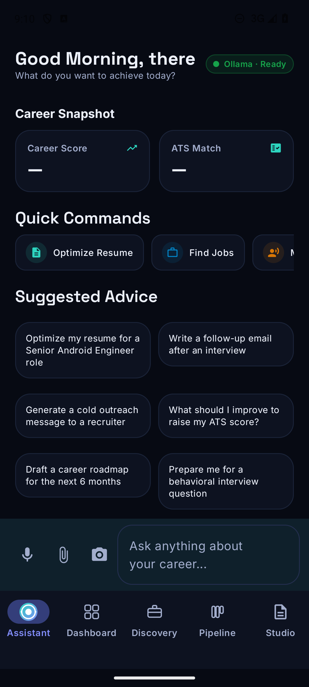
06 · Assistant (orb tab) — N1 orb slot
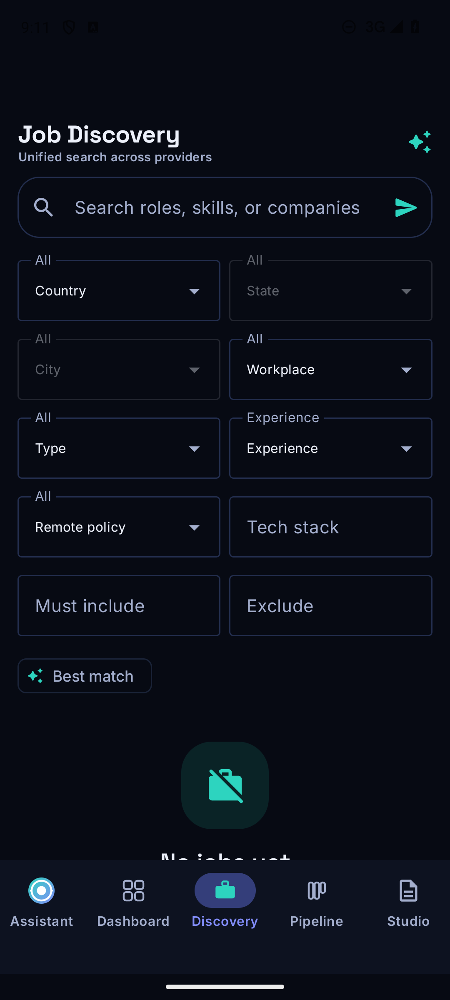
07 · Discovery — search + filters
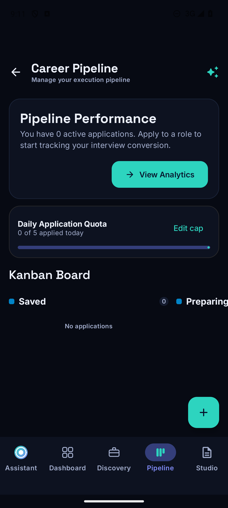
08 · Pipeline — kanban workspace
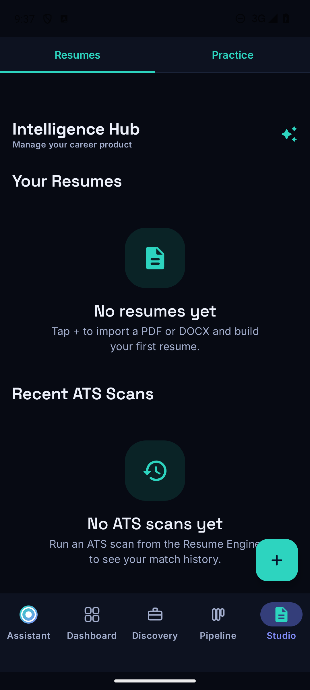
09 · Studio / Resumes — merged workspace
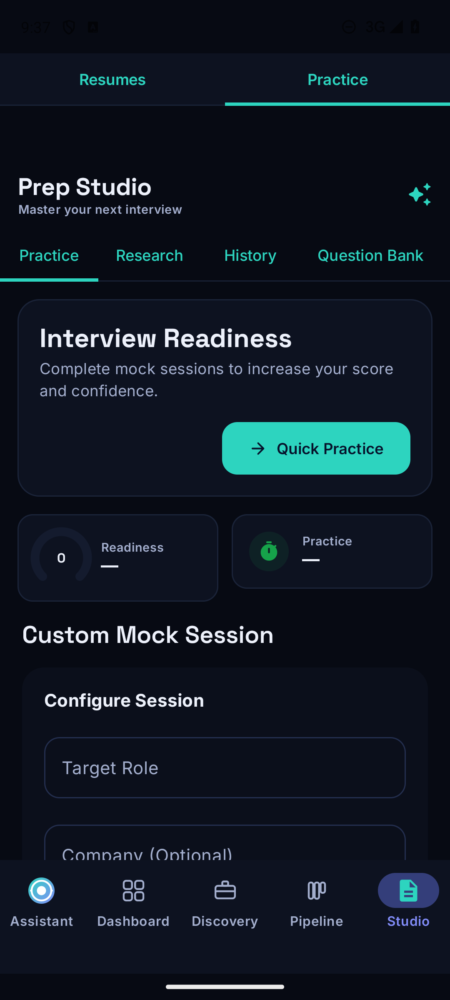
10 · Studio / Practice — segment switch
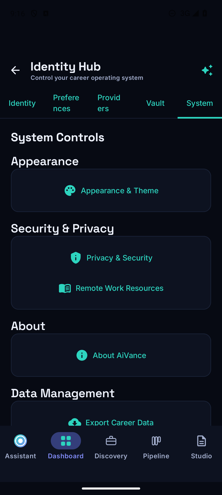
11 · System controls — Appearance entry point